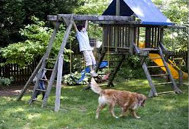

Fitness
Teen fitness is critical for physical and mental health. You need 60 minutes of moderate to vigorous physical activity every day to stay healthy. Being active will help you in many different ways.
For example, it will help you by:
- boosting academic performance
- establishing healthy habits
- managing weight
- building muscle
- control blood pressure
Reference: familyfitness.about.com 